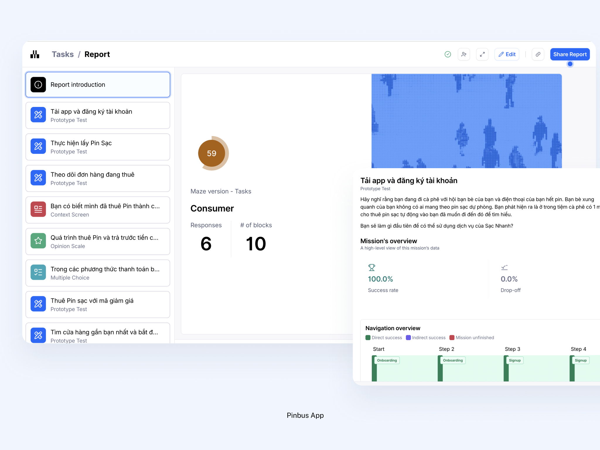
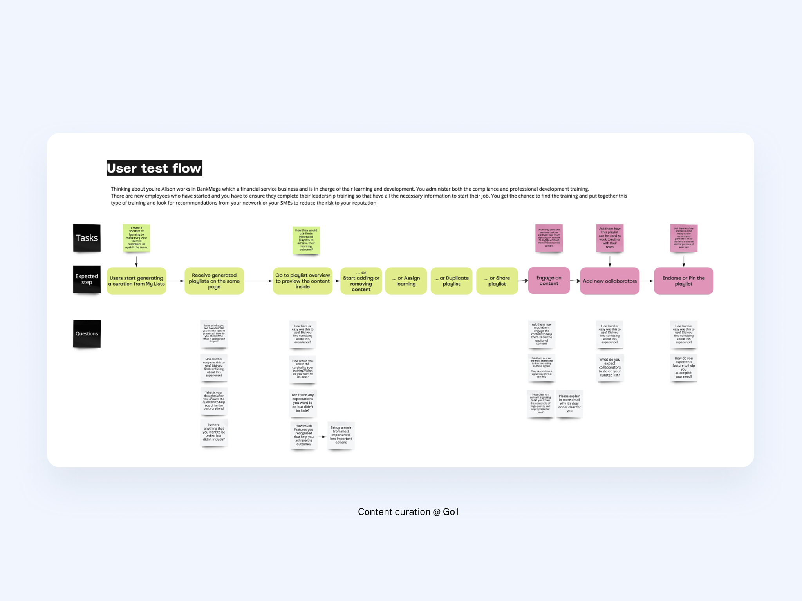
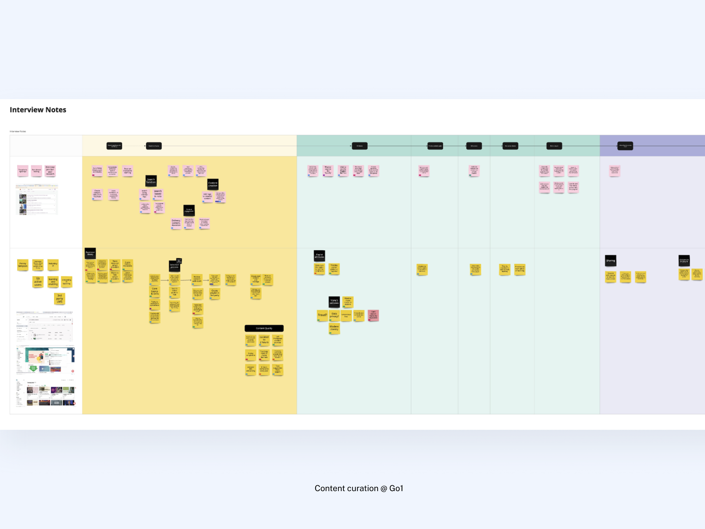
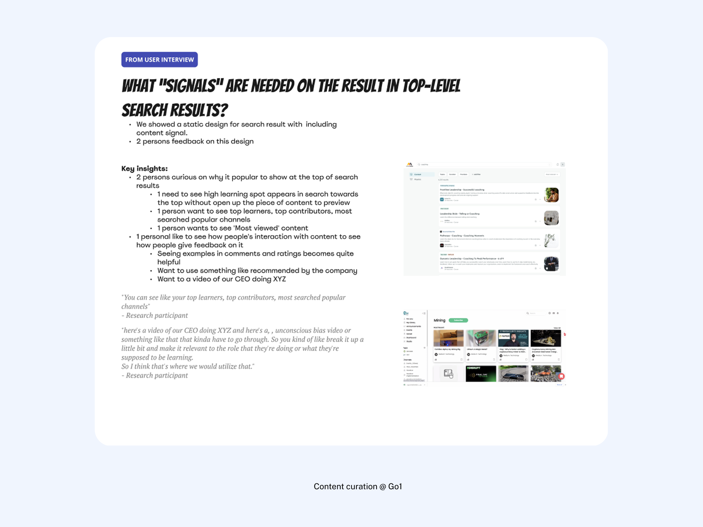

Overview
Most designers know they should test. Few know what they're actually testing for. This session closes that gap — and closes the design thinking loop.
Students arrive with a working prototype from the previous session. The goal now is not to show it off — it's to find out if it works for real users. That requires a mindset shift: a prototype is not a deliverable. It's a hypothesis. And a hypothesis only becomes knowledge when it's tested against reality.
The session builds that testing capability in five connected phases. First, the validation mindset — understanding what you're actually trying to learn before writing a single test task. Second, method selection — choosing the right testing approach for the fidelity level and the question being asked. Third, test planning — writing tasks, scenarios, and success criteria that produce useful data. Fourth, running the session — facilitation skills, the think-aloud protocol, and how to capture observations without leading the user. Fifth, synthesis — using the Feedback Capture Grid and severity framing to turn raw observations into prioritised recommendations.
An AI in Practice section runs through Phase 3: students use an AI tool to generate a draft test script from their prototype flows — then critically evaluate and edit what it produces.
Learning Objectives
By the end of this session, students will be able to:
- Reframe a prototype as a testable hypothesis and articulate the specific question it needs to answer
- Choose the right testing method based on fidelity level and the question being asked
- Write a test plan with clear goals, tasks, scenarios, and success criteria
- Facilitate a moderated usability session using the think-aloud protocol
- Synthesise findings into prioritised recommendations using the Feedback Capture Grid and severity framing
- Use an AI tool to generate a draft test script and critically evaluate what it gets wrong
Materials Needed
- Students' working prototypes from the AI Prototype Development session (Figma or browser-based)
- Feedback Capture Grid template — printed or in FigJam (source:
Source/ux-material/design-thinking/feedback-capture-grid.pdf) - Test Plan template in Notion (to be shared at session start)
- Access to an AI tool for the Phase 3 activity
- Zoom or a shared FigJam board for the role-play in Phase 4
Pre-Class Preparation
Ask students to do the following before the session:
- Have your prototype ready — the working prototype from the previous session. At minimum, it should have 2–3 connected screens. If it's not clickable yet, a Figma prototype with basic navigation will work.
- Write one sentence answering: "What is the one thing I most want to know about whether my design works?" Bring this to class.
- Read (optional): IDF's Prototyping to Test (source:
Source/ux-material/design-thinking/prototyping-to-test.pdf) — two pages, ten minutes.
Session Plan
| Act | Block | Topic | Duration |
|---|---|---|---| | 1 · Mindset | Opening | The prototype-as-hypothesis frame — what are you actually testing? | 10 min | | 2 · Methods | Teaching | Testing spectrum — moderated, unmoderated, and when to use each | 10 min | | 3 · Methods | Activity | Students pick a method for their project and justify it in one sentence | 5 min | | 4 · Test Plan | Teaching | Test plan components: goal, participant profile, tasks, scenarios, success criteria | 10 min | | 5 · Test Plan | AI in Practice | Students generate a draft test script with AI then edit it | 10 min | | 6 · Facilitation | Teaching | Moderator role, think-aloud protocol, six facilitation tips | 10 min | | 7 · Facilitation | Demo | Live role-play: one student tests a peer's prototype, group observes | 10 min | | 8 · Synthesis | Teaching | Feedback Capture Grid + severity framing + importance × feasibility matrix | 10 min | | 9 · Close | Teaching | Iteration loop + preview of Session 8 | 5 min | | 10 · Close | Assignments | Two assignments briefed + wrap-up | 5 min (overlap) |
Total: 90 min
Story logic: The session follows the natural order of a testing cycle — decide what to test → choose how to test → plan the test → run it → make sense of what you learned. Each phase is a prerequisite for the next. The role-play in Phase 4 makes the facilitation skills concrete before students go off to do it themselves. The synthesis phase connects back to the validation mindset at the opening: every observation is evidence for or against the original hypothesis.
Core Content
Phase 1 — The Validation Mindset
The prototype is a hypothesis
In the previous session, students built a working prototype. The natural instinct now is to show it to people and get feedback. That's useful — but it's not the same as testing.
Testing has a specific meaning: you start with a question, design a way to answer it, and let the evidence tell you whether you were right. The alternative — showing people your prototype and asking "what do you think?" — produces opinions, not evidence. Opinions are useful for generating ideas. Evidence is what you need to make decisions.
A prototype is a hypothesis made tangible. Before writing a single test task, students need to be able to complete this sentence:
"We believe [this design] will help [this user] do [this task] because [this reason]. We'll know we're right when [this signal]."
This is the same assumption formula from Session 2. The difference is that now there's a prototype — something concrete to test against.
What are you actually testing?
Three different questions require three different testing approaches:
Usability — Can users complete the task? Do they understand the interface? Where do they get stuck? Best method: Moderated task-based usability test. Watch users attempt specific tasks, observe where they struggle.
Desirability — Do users want what this design offers? Does it feel right for their context and expectations? Best method: Concept testing early (before high-fidelity), or post-task debrief questions after a usability test.
Comprehension — Do users understand what the product is, what it does, and what's being asked of them? Best method: Five-second test, first-click test, or think-aloud with low-fidelity wireframes.
Most student prototypes at this stage need a usability test — but students should know which question they're asking before they design the test.
Real case: Go1 — quick validation with Maze and Intercom
At Go1, a product team needed to validate a solution before committing to build. Rather than waiting to recruit participants or schedule moderated sessions, the team used a combination of Maze (unmoderated testing tool) and Intercom (customer communication platform) to reach real customers quickly.
The process: set the test goal and define the happy path → build the prototype in Figma → publish a Maze link → use Intercom to send the link to a filtered segment of relevant customers → analyse completion rates and drop-off points within 48 hours.
This is not a replacement for moderated testing — but it showed the team where the prototype was breaking before a single line of code was written. The key insight: you don't need a lab or a long recruitment process to learn something real. You need a clear question, a testable prototype, and access to real users.
Phase 2 — Choose Your Method
The testing spectrum
Testing methods exist on a spectrum from low effort to high rigour. No single method is best — the right one depends on what you're trying to learn and how much time you have.
| Method | What it answers | Fidelity needed | Effort |
|---|---|---|---| | Hallway test | Does this make sense at a glance? | Low-fi | Very low | | Five-second test | What's the first impression? What do users remember? | Any | Low | | Moderated usability test | Can users complete tasks? Where do they struggle? | Mid to high-fi | Medium | | Unmoderated usability test (Maze, Lyssna) | Task completion, drop-off rates, at scale | Mid to high-fi | Low–medium | | Concept test | Do users understand and want this idea? | Low-fi or none | Low | | A/B test | Which version performs better? | Live product | High |
At the prototype stage, moderated and unmoderated usability testing are the most relevant. The decision between them comes down to one question: do you need to know why, or just what?
- Moderated: Gives you the why — you can follow up, probe, and observe. Slower, requires scheduling. Best when you have specific questions about behaviour and motivation.
- Unmoderated: Gives you the what at scale — task completion rates, drop-off points, click patterns. Faster and cheaper. Best for validating specific tasks or flows.

The "5 users" rule
For moderated qualitative testing, 5 participants is the standard starting point. Research by Nielsen Norman Group showed that 5 users uncover ~85% of usability issues in a single round. Beyond 5, you start seeing diminishing returns.
This rule applies to qualitative testing only. Unmoderated tests, A/B tests, and surveys need larger sample sizes to produce statistically valid results.
In-class activity (5 min): Each student picks the method most appropriate for their prototype and writes one sentence justifying the choice. Share back.
Phase 3 — Write Your Test Plan

Test plan components
A test plan is a short document that defines everything needed to run a consistent session. It doesn't need to be long — one page is enough at this stage.
Goal — What question does this test answer? One sentence. Link it back to the hypothesis. Example: "We want to know whether new users can complete the onboarding flow without assistance in under 3 minutes."
Participant profile — Who are you testing with? Define the key characteristics that matter for this prototype. Example: "First-time users of a project management tool, aged 25–45, who currently use spreadsheets to track work."
Tasks — The specific actions you ask participants to attempt. These should be realistic and neutral — no hints.
Scenarios — Context that sets up the task without revealing the answer. Give users a reason to care about completing the task.
Success criteria — How will you know the task was completed successfully? Define this before the session, not after.
How to write a good task
The difference between a good task and a bad one is neutrality and realism.
| Bad task | Why it's bad |
|---|---| | "Click the Buy Now button to purchase the item." | Gives away the answer. Tells the user what to click. | | "Would you use this checkout flow?" | Asks for opinion, not behaviour. | | "Imagine you want to buy something. What would you do?" | Too vague — no context, no goal. |
| Good task | Why it works |
|---|---| | "You've decided to buy a gift for a friend. Show me how you'd complete the purchase." | Realistic context, neutral language, clear goal. | | "You need to update your billing address before your next payment. How would you do that?" | Specific situation, no hints about where to look. |
Scenarios vs tasks
A scenario is the story that contextualises the task. It gives the user a role and a reason.
Scenario: "You've just joined a new company and your manager has asked you to set up your profile so the team can find you. You have 5 minutes before a meeting."
Task (follows from scenario): "Go ahead and set up your profile."
The scenario provides motivation and urgency. The task is the specific thing you observe.
AI in Practice
🤖 Try this with AI
Paste this prompt into your AI tool:
"I'm testing a prototype of [describe your product in one sentence]. The main user flow I'm testing is: [paste your user flow or describe the key screens]. Write a test plan including: 1 test goal, 1 participant profile, 3 realistic task scenarios with success criteria for each. Write tasks in neutral language — no hints about where to click or what to do."
After generating, ask the AI:
"Now review each task and flag any that contain leading language, give away the answer, or wouldn't make sense to a real user unfamiliar with this product."
🧠 Critical thinking prompts
- Did the AI write tasks that are neutral, or does it give away where to click?
- Did it understand who the actual user is — or did it guess based on the product description?
- Are the success criteria measurable, or just vague descriptions?
- What context did the AI not have that changed the quality of its output?
✍️ Prompt engineering tip
The more specific your user flow input, the better the task output. Paste actual screen names or step descriptions rather than summarising vaguely. If the AI produces generic tasks, add: "The user has never seen this product before and doesn't know what it's called. Rewrite each task from that perspective."
⚖️ Ethics consideration
Unmoderated tests using tools like Maze or Lyssna record user behaviour without a live facilitator. Make sure participants know their session is being recorded and that data will be used for research. Include a consent statement before the test begins. For internal teams or colleagues, verbal consent is enough — but for recruited participants or customers, written consent via the tool's intro screen is required.
Phase 4 — Run the Session
The moderator's role
The moderator's job is to observe, not guide. The moment you help a user who is struggling, you've lost the data. A user who gets stuck is giving you exactly the information you need — where the interface fails.
This is uncomfortable. Watching someone struggle with something you designed feels personal. The discipline is to resist the instinct to help and instead ask a neutral prompt:
- "What are you thinking right now?"
- "What would you do next if I weren't here?"
- "What were you expecting to happen?"
These prompts surface the user's mental model without leading them.
Think-aloud protocol
The think-aloud protocol asks participants to narrate their experience as they go — saying out loud what they're looking at, what they're thinking, and what they're trying to do.
Brief participants at the start: "As you go through this, please say out loud what you're thinking — what you're looking at, what you expect to happen, what's confusing or easy. There are no wrong answers. You're helping us improve the design, not the other way around."
Not all participants take to this naturally. If they go quiet, use a neutral prompt: "What's going through your mind right now?"
 Recorded moderated user interview with video and timestamped transcript in Dovetail Real example: moderated interview recording from Go1 Content Curation research — video + auto-timestamped transcript in a research repository tool
Recorded moderated user interview with video and timestamped transcript in Dovetail Real example: moderated interview recording from Go1 Content Curation research — video + auto-timestamped transcript in a research repository tool
Six facilitation principles
Based on IDF's feedback-gathering best practices:
- Ask before you show — Start with context questions before the prototype. "Tell me about how you currently handle [this task]." This gives you a baseline and builds rapport.
- Test on the right people — At this stage, test on real potential users — not colleagues who know your project. Consider extreme users (power users, total beginners) who surface issues that affect everyone.
- Ask, don't tell — If users ask questions during the test ("Should I click here?"), turn it back: "What would you do if I wasn't here?" Never answer a question that reveals the answer.
- Stay neutral when presenting — Don't sell the design. Don't say "we designed this to make it easier." The user's job is to evaluate it, not validate it.
- Adapt when the script isn't working — If a task prompt is confusing participants, it's fair to rephrase. A rigid script that produces no useful data is worse than a flexible one that does.
- Let users contribute ideas — When users say "I wish this did X," ask them to describe what that would look like. These unsolicited suggestions often point to the underlying need better than any question you could ask.
Live role-play (10 min)
One student plays the moderator. One student plays a participant using a peer's prototype. The rest of the group observes and fills in a Feedback Capture Grid in real time.
Debrief: What did the moderator do well? What was hard to resist? What did observers notice that the moderator missed?
Phase 5 — Synthesise & Prioritise

Feedback Capture Grid
The Feedback Capture Grid (from Source/ux-material/design-thinking/feedback-capture-grid.pdf) divides observations into four quadrants:
| Likes ✓ | Criticisms ✗ |
|---|---| | What worked. What users responded positively to. | What didn't work. Where users got stuck, confused, or frustrated. |
| Questions ? | Ideas 💡 |
|---|---| | Questions the test session raised — from users or from the team. | Ideas the session sparked — from users' suggestions or from your own observations. |
Use the grid during the session (one note-taker fills it in live) or immediately after (team debriefs into it together). The goal is to capture raw observations before interpretation happens.
Key rule: In the Criticisms quadrant, write what the user did, not what you think it means. "User spent 40 seconds on the payment screen without clicking" is an observation. "The payment screen is confusing" is an interpretation. Keep them separate.
From observations to findings
Once observations are captured, move from the what to the why:
"[User] did [X]" → "Users struggle to [Y] because [Z]"
Example:
- Observation: "3 of 5 participants tried to tap the logo to go home."
- Finding: "Users expect the logo to be a home button — the current navigation doesn't have a clear home action."
This is the format to use when writing up findings for stakeholders or your own design decisions.

Severity framing
Not all findings are equal. Prioritise using two dimensions:
Impact — How much does this issue affect the user's ability to complete their goal? (1 = minor annoyance, 5 = task failure)
Frequency — How many participants experienced this issue? (1 = one person, 5 = everyone)
Multiply the two scores. Issues with the highest combined score go to the top of the fix list.
Importance × feasibility matrix
After prioritising by severity, evaluate what's worth fixing in this iteration using the importance × feasibility matrix (rate each finding 1–5 on both dimensions):
- High importance + high feasibility → Fix now
- High importance + low feasibility → Plan for next sprint
- Low importance + high feasibility → Quick wins (fix if time allows)
- Low importance + low feasibility → Defer or drop
This prevents the common mistake of spending iteration time on small visual fixes while leaving critical usability failures unresolved.
Phase 6 — Close the Loop
What "done with testing" actually means
Testing doesn't end after one round. The output of a test session is not a final answer — it's a more informed hypothesis. Fix the highest-severity issues, update the prototype, and test again. Two to three rounds of testing on a prototype will surface most of the critical issues before anything goes to development.
The iteration cycle: observe → synthesise → prioritise → fix → retest. Each round narrows the gap between what you designed and what users actually need.
The connection back to Session 1
In Session 1, the programme introduced design thinking as a loop — not a linear process. Testing is where that loop closes. The findings from a usability test feed directly back into synthesis (Session 3), ideation (Session 5), and prototyping (Sessions 6–7). Nothing learned in a test session is wasted — even findings that tell you the design is wrong are exactly the kind of learning that makes the next version better.
Assessment
Quick knowledge check
- You have a clickable prototype and two days to learn something before a stakeholder review. What testing method do you choose and why?
- A participant in your usability test asks "Am I supposed to click the big button?" What do you say?
- You have 12 findings from a test session. How do you decide what to fix first?
Reflection prompt (assignment)
"Before this session, how did you think about user testing — as a final step, a validation exercise, or something else? After running your first test, what surprised you most about how users experienced your prototype?"
Assignments
Assignment A — Run a Moderated Usability Test
Run one moderated usability test on your prototype with one real participant (not a classmate or someone who knows your project).
Before:
- Share your prototype link or set up the device in advance
- Brief the participant: "I'm testing the design, not you. There are no wrong answers. Please say out loud what you're thinking as you go."
- Have your test plan and Feedback Capture Grid ready
During:
- Give each task as a scenario, then let the participant go — don't help
- Take notes in the Criticisms and Questions quadrants as you go
- Use "What are you thinking right now?" when they go quiet
After:
- Complete the Feedback Capture Grid (all four quadrants)
- Write up 3–5 findings using the observation → finding format
- Prioritise using impact × frequency
- Identify the one change that would have the biggest effect on usability
Deliverable: Feedback Capture Grid + 3–5 findings + one priority recommendation. Bring to Session 8.
Assignment B — Run an Additional Test (Optional / Stretch)
Run an additional test session using either moderated or unmoderated testing — whichever method you didn't use for Assignment A.
Further Resources
- Prototyping to Test — IDF template (
Source/ux-material/design-thinking/prototyping-to-test.pdf) - Six Best Practice Tips for Gathering Feedback on Your Prototypes — IDF guide (
Source/ux-material/design-thinking/six-best-practice-tips-for-gathering-feedback-on-your-prototypes.pdf) - Feedback Capture Grid — IDF template (
Source/ux-material/design-thinking/feedback-capture-grid.pdf) - Quick validate the solution with a usability testing tool and Intercom — Winnie's Go1 case study (Notion)
- 8 Usability Testing Methods That Work — Contentsquare (2026) — https://contentsquare.com/guides/usability-testing/methods/
- What Is User Testing in 2026? — Userpilot — https://userpilot.com/blog/what-is-user-testing/
- Conducting Usability Testing — IxDF course — https://ixdf.org/courses/conducting-usability-testing
Created by Winnie Nguyen · UX Class · Last updated June 2026